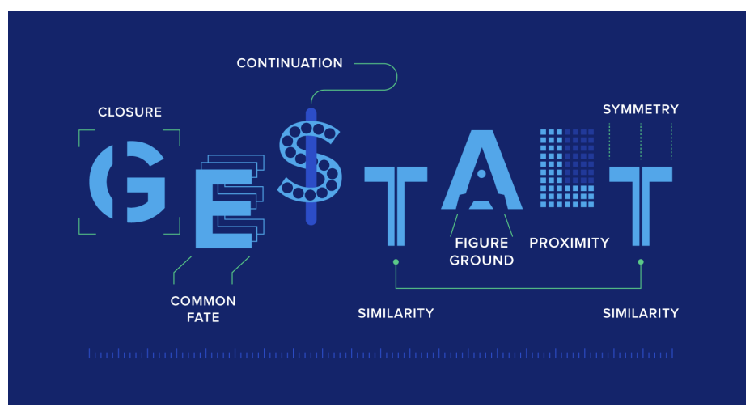

Proximity - ting placeret tæt på hinanden opfattes som mere beslægtede end dem som er anbragt længere væk fra hinanden.
Similarity - ting der ligner hinanden opfattes som mere beslægtede end ting der ikke gør
Common fate - mennesker opfatter ting der flytter sig i samme retning som mere beslægtede end de ting som står stille eller bevæger sig modsat af hinanden
Closure - når man ser på et komplekst arrangement af individuelle elementer, har mennesker en tendens til først at lede efter et enkelt, genkendeligt mønster.
Good continuation - elementer arrangeret på en linje eller kurve opfattes som værende mere relaterede end elementer, der ikke er på linjen eller kurven.
Uniform connectedness - elementer, der deler ensartede visuelle karakteristika, opfattes som værende mere beslægtede end elementer med forskellige visuelle karakteristika.
Law of prägnanz - mennesker har en tendens til at fortolke tvetydige eller komplekse billeder som enkle og fuldstændige.
Figure ground relationships - Elementer opfattes som enten figurer (særskilte fokuselementer) eller grund (baggrunden eller landskabet, som figurerne hviler på).
white space er det der er mellemrum mellem elementer. Det er alt det tomme rundt om f.eks. google logoet. White space er ikke nødvendigvis hvid baggrund. Det kan også være et billede eller en anden farve.
De to dimensioner skaber en balance og ro.Hvis der er ubalance i en af de to dimensioner, kan den anden dimension overrumple den andet og skabe endnu mere kaos.
Det er et intuitivt element og såvel også synligt element, som er separeret fra baggrunden. De er ikke altid lige lette at adskille fra baggrunden. Visuelle cues: Kontraster, bokse, skygger og størrelser. Det handler om hvad du ser først, hvad kommer først i fokus?
Primære - rene farver
Sekundære - blandet af to primære farver
Tertiære - blandet af én primær og én sekunder farve
Det er vigtigt at pointere, at et farvesystem ikke er absolut, men bygger på forskellige teoretiske opfattelser og kan veksle med forskellige kulturers farvesyn.
RGB benyttes på computerskærme og CMYK er til tryksager.
Typografi er ikke kun skrifttypen, det er også:
Der findes sans- og sans serif. Sans er fransk og betyder uden, og skal forstået som typefaces med eller uden "fødder" (Bogner, 2021)
Vi har i dette forløb lært om de forskellige designprincipper, herunder gestaltlovene. Derudover kiggede vi på både farver og typografi, og hvorledes disse spiller sammen med designprincipperne.